Getting a Grasp on the Random Walk Hyperparameter
Thierry Onkelinx
2024-10-04
Source:vignettes/rwprior.Rmd
rwprior.Rmd1-D Random walks
The functions below are designed with the first order
(rw1) and second order random walk (rw2) in
mind. Both are one dimensional random walks. The first order random walk
is defined as a random step at each point in time
().
All random steps are independent and identically distributed. INLA uses
a zero mean Gaussian distribution with variance
.
The second order random walk has steps defined as second order difference (the difference of differences). Here to second order differences are independent and identically distributed. INLA uses a zero mean Gaussian distribution with variance .
$$\Delta^2 x_i = \Delta x_{i + 1} - \Delta x_i \\ \Delta^2 x_i = (x_{i+1} - x_i) - (x_i - x_{i-1}) = x_{i+1} - 2 x_i + x_{i-1}\\ \Delta^2 x_i \sim \mathcal{N}(0, \sigma ^ 2)$$
Simulating random walks
Both random walks can be simulated with the
simulate_rw() function. order = 1 (the
default) generates first order random walks, order = 2
generates second order random walks. The hyperparameter must be
specified, either as the standard error (sigma = 0.05) or
as the precision (tau = 20). Another important argument is
length which governs the number of time points in the time
series. The default is length = 10, however it is important
to set it to the length of the random walk in your model.
set.seed(20181209)
# first order random walk
rw1 <- simulate_rw(sigma = 0.05, length = 20)
# second order random walk
rw2 <- simulate_rw(sigma = 0.05, length = 20, order = 2)Inspecting simulated random walks
simulate_rw() returns a data.frame with three variables:
the time point x, the random walk y and the
simulation replicate. The default number of simulation is
1000. You can request a different number of simulations by setting the
n_sim argument in simulate_rw().
library(dplyr)
#>
#> Attaching package: 'dplyr'
#> The following objects are masked from 'package:stats':
#>
#> filter, lag
#> The following objects are masked from 'package:base':
#>
#> intersect, setdiff, setequal, union
glimpse(rw1)
#> Rows: 20,000
#> Columns: 3
#> $ x <dbl> 1, 2, 3, 4, 5, 6, 7, 8, 9, 10, 11, 12, 13, 14, 15, 16, 17, 1…
#> $ y <dbl> 0.00000000, 0.08202519, 0.05488452, 0.06980374, 0.04451746, …
#> $ replicate <int> 1, 1, 1, 1, 1, 1, 1, 1, 1, 1, 1, 1, 1, 1, 1, 1, 1, 1, 1, 1, …Since a visual inspection is much more easy, we have defined a
plot() method of the simulated random walks. This function
will return a ggplot() plot, which can be fine-tuned using
ggplot2 functions. The plot title displays the
hyperparameter of the simulation as the standard error
,
the variance
and the precision
.
Each simulated random walk is displayed as a single line. Details on
this plotting function can be found at in the helpfile of
plot.sim_rw().
plot(rw1)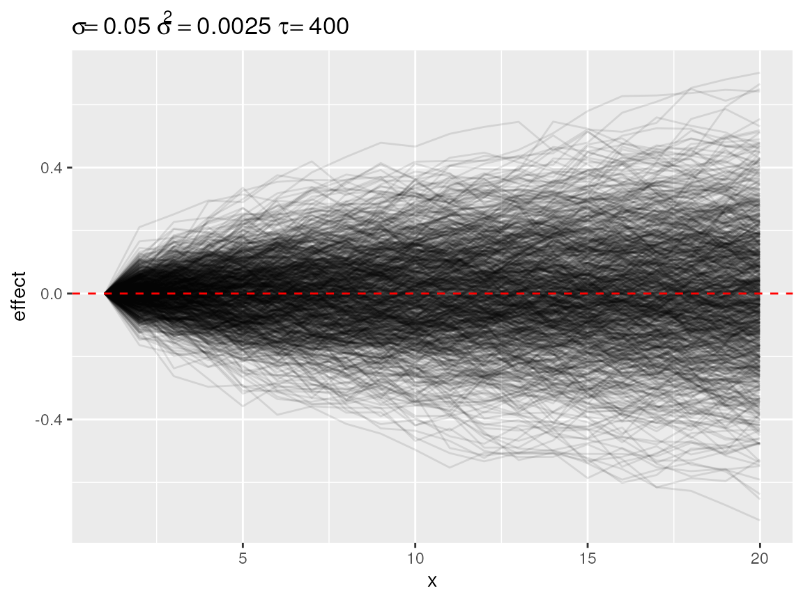
Default plot of simulated random walks applied on a first order random walk
plot(rw2)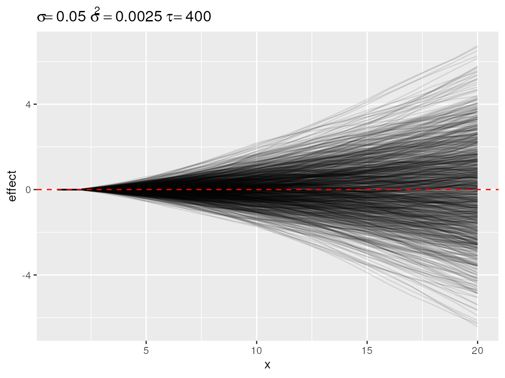
Default plot of simulated random walks applied on the second order random walk
Summarising and subsetting
Plotting all simulations only yields a general idea on the likelihood
of different effect sizes. However, plotting every simulation can be
time consuming. Therefore we created a select_subset()
function which calculates the quantiles over all simulations at each
point in time. The user can specify the required probabilities through
the quantiles argument. These default to 2.5%, 10%, 25%,
50% 75%, 90% and 97.5%. The resulting object is again a data.frame with
the same structure as the simulations, which can be visualised with the
plot() function. The quantiles are useful to visualise the
envelope of all potential random walks with that specific
hyperparameter.
rw1_q <- select_quantile(rw1, quantiles = c(0.05, 0.95))
glimpse(rw1_q)
#> Rows: 40
#> Columns: 3
#> Groups: x [20]
#> $ x <dbl> 1, 1, 2, 2, 3, 3, 4, 4, 5, 5, 6, 6, 7, 7, 8, 8, 9, 9, 10, 10…
#> $ y <dbl> 0.00000000, 0.00000000, -0.08324475, 0.08387901, -0.11241900…
#> $ replicate <fct> 5%, 95%, 5%, 95%, 5%, 95%, 5%, 95%, 5%, 95%, 5%, 95%, 5%, 95…
plot(rw1_q)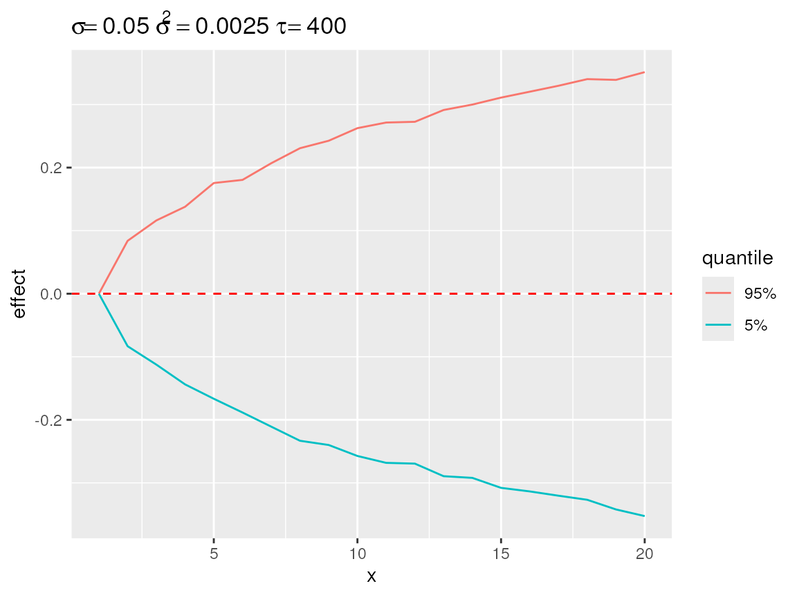
Quantiles over all simulation at each point in time displaying the enveloppe around the simulations.
select_divergence() is another option to visualise how
strong the effect of the random walk can be. It selects the
n (default n = 10) simulation which the
strongest deviation from the baseline. The result is somewhat comparable
with select_quantile() with extreme probabilities. The main
difference is that select_divergence() returns a actual
simulated time series.
rw1_d <- select_divergence(rw1)
plot(rw1_d)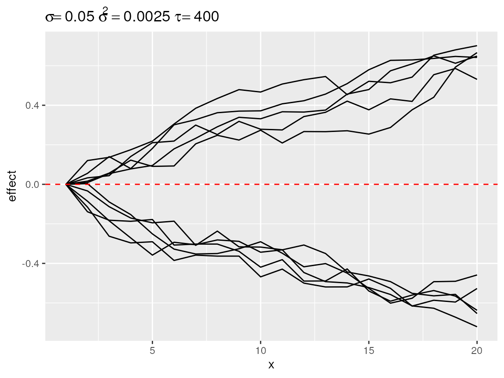
Most diverging random walks for a second order random walk process.
select_change() counts the number of changes in
direction per time series. A change in direction occurs the one first
order differences change sign when going from one point in time to the
next point in time. The function return a selection (default
n = 10) time series with the most changes in direction.
These are often the most wiggly time series.
rw1_c <- select_change(rw1)
plot(rw1_c)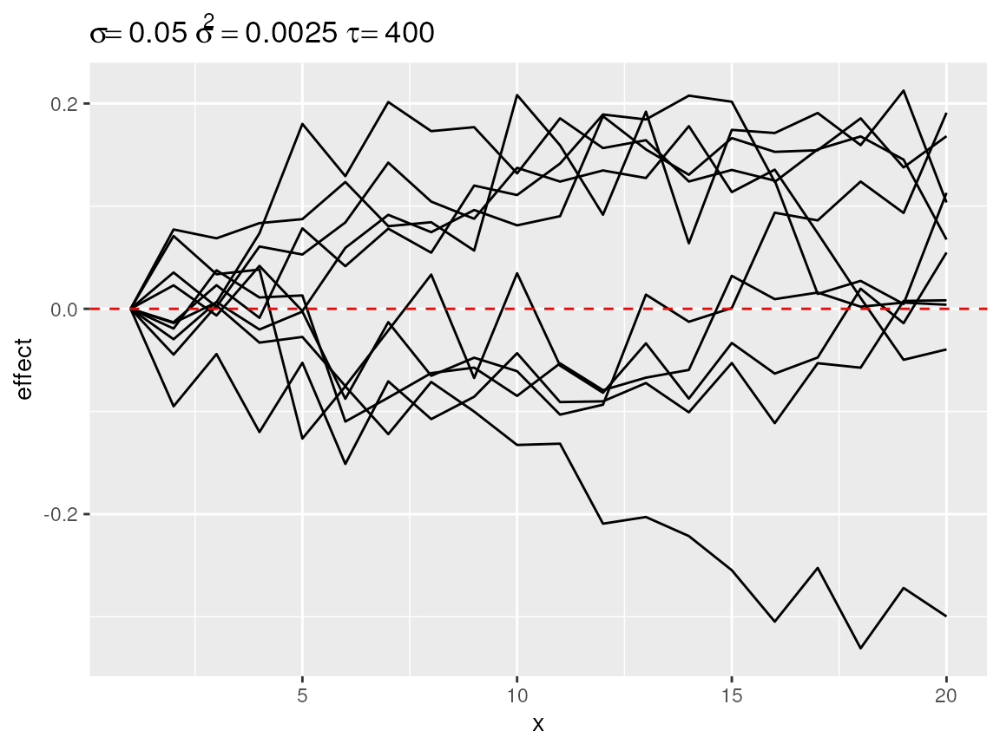
First order random walks with lots of changes in directions.
Finally, there is select_poly(). This function is useful
when we assume that the random walk in the model will more or less match
a pattern which can be described by a polynomial function.
select_poly() fit will orthogonal polynomials see
(poly()). The coefficients of the fitted polynomials
compared with the user defined target coefficients. The target
coefficients are rescaled to that there norm equals 1. The fitted
coefficients are rescaled by a common factor so that the largest norm
equals 1.
rw1_s1 <- select_poly(rw1, coefs = c(1))
rw1_s2 <- select_poly(rw1, coefs = c(0, -1))
rw1_s3 <- select_poly(rw1, coefs = c(0, 1))
plot(rw1_s1)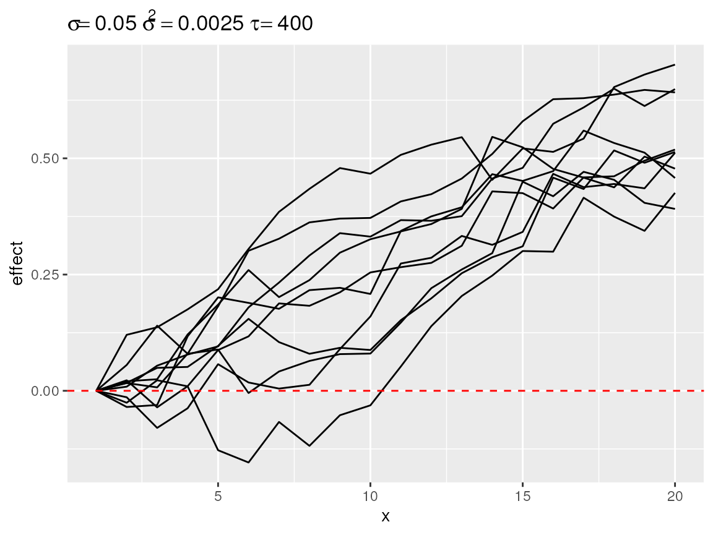
Simulated random walks best matching coefs = 1
plot(rw1_s2)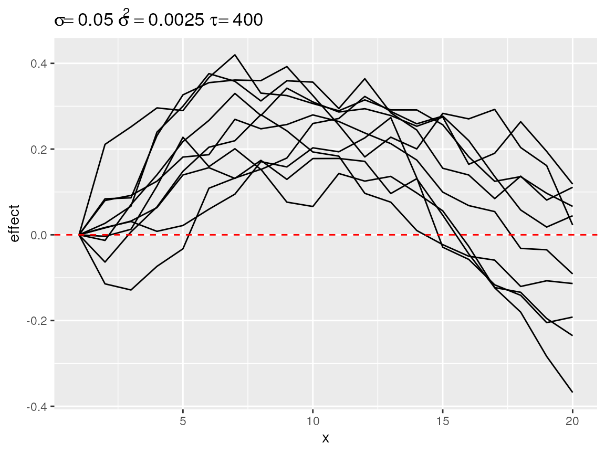
Simulated random walks best matching coefs = c(0, -1)
plot(rw1_s3)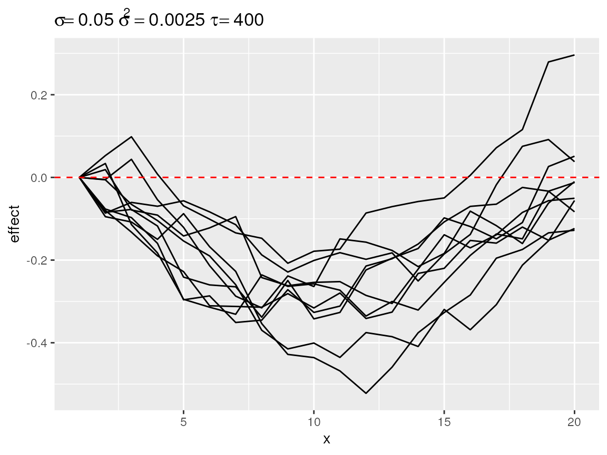
Simulated random walks best matching coefs = c(0, 1)
An attentive reader might have noticed that the different subsetting
functions result in the selection of random walk with a different range
although they all share the same hyperparameter. Therefore we recommend
to ponder on the kind on random walk pattern you can expect from the
data and use that information to choose between the subsetting
functions. Is a quasi linear pattern plausible? Then
select_diverging() is probably the most useful function. Do
you expect a seasonal pattern with a single peak in the middle? Then
select_poly() with coefs = c(0, -1) is the way
to go. Frequent oscillations around a baseline? Check out
select_change(). You don’t have a clue? Do some more
research on the topic you are modelling, talk with domain experts and do
some exploratory data analysis. Then come back to this vignette.
Baseline
Each plot has a horizontal red dashed line: the baseline. Each
simulation is displayed as the random walk + the baseline. The default
baseline is 0. The user can specify one or more custom baselines through
the baseline argument of the plot() function.
Each baseline will have its own subplot to avoid overplotting.
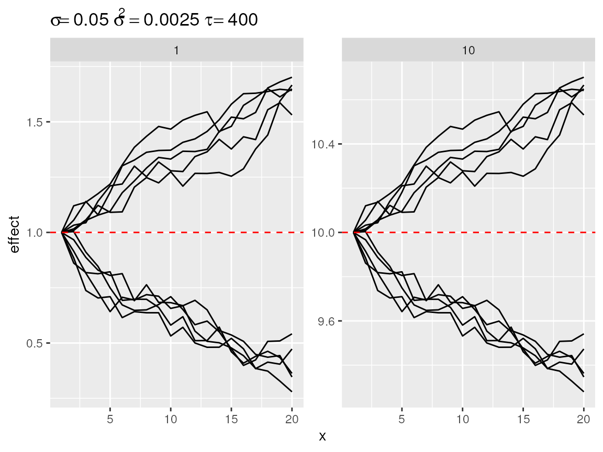
Plot divergent random walks against two baselines.
Transformations
Random effect are often applied in model that use a link function
between the linear predictor and the parameter of the distribution.
Think of the log-link with a Poisson or negative binomial distribution
and the logit-link with a binomial distribution. Setting the
link argument while plot will apply the
back-transformation. Setting the link will also change the default
baseline: baseline = 1 for link = "log" and
baseline = c(0.05, 0.1, 0.25, 0.5) for
link = "logit". We use several baseline values for
link = "logit", because the effect of the random walk, in
terms of absolute difference in proportion, will depend on the baseline
value. Note that the baseline value is expressed on the scale of the
observations.
plot(rw1_d, link = "log")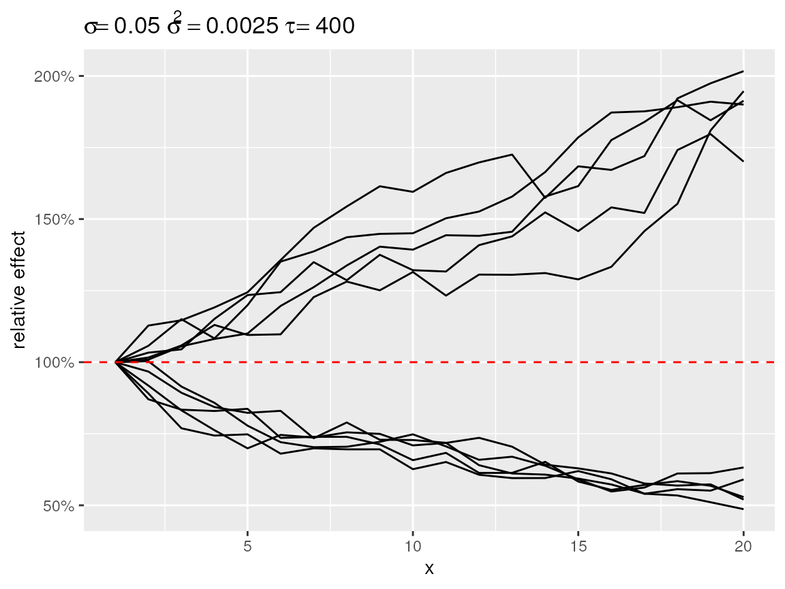
Divergent random walks with a log-link back-transformation
plot(rw1_d, link = "logit")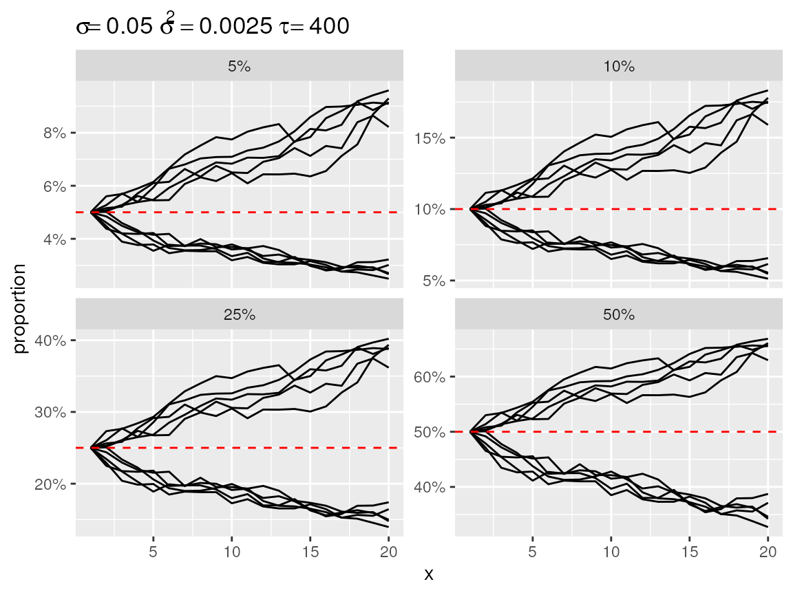
Divergent random walks with a logit-link back-transformation
Centring
By default the start of each random walk is centred on the baseline. This makes it easy to see how strong the cumulative change can be over the length of the random walk. Other options are “mean”, “bottom” and “top.” “mean” implies centring the random walk to a zero-mean effect before adding the baseline. This zero-mean centring is what INLA applies to the random walk during this model fitting. “bottom” centring fixes the lowest value of the random walk to the baseline. This make is easy to inspect the total range of the random walk. “top” does the same thing while fixing the highest value to of the random walk to the baseline.
plot(rw1_s2, center = "mean")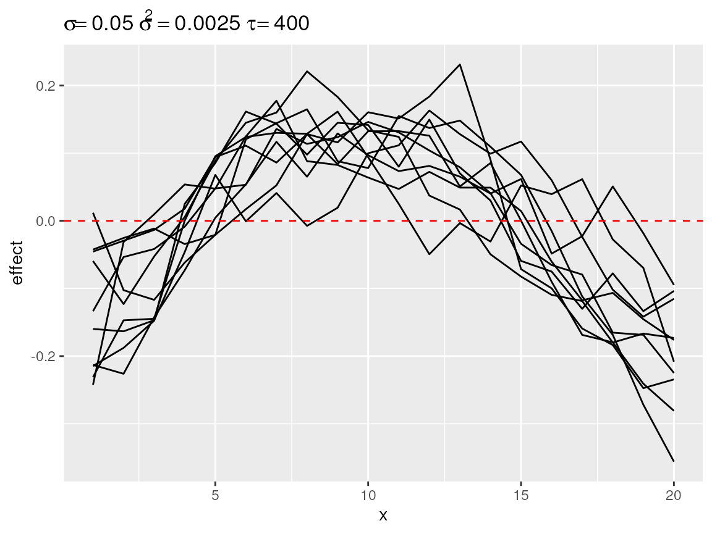
Second degree polynomial random walks with mean centering
plot(rw1_c, center = "bottom", link = "log")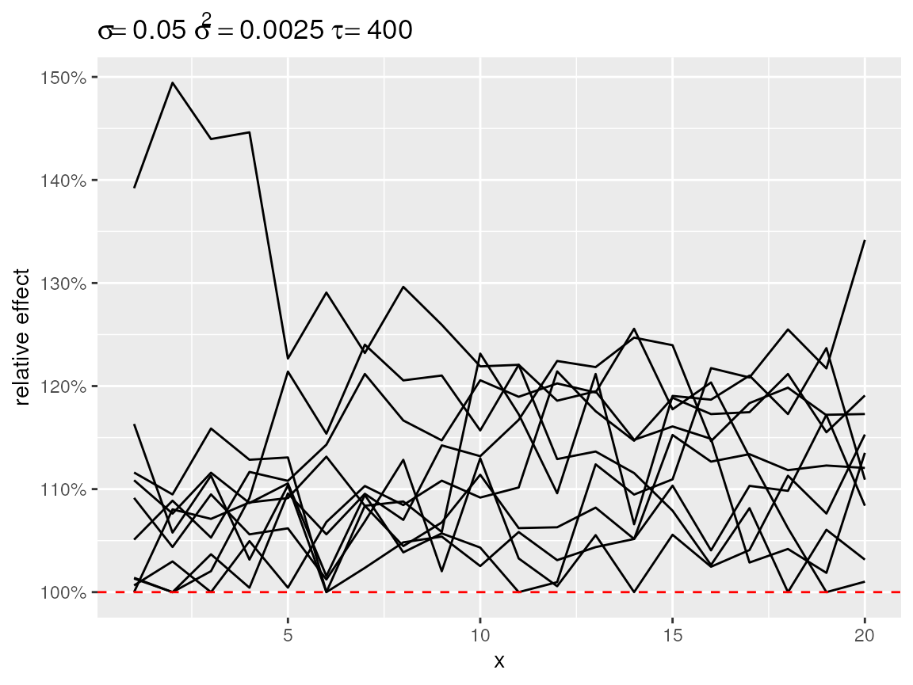
First order random walks with lots of changes in directions after centering to the bottom.
plot(rw1_c, center = "top", link = "logit")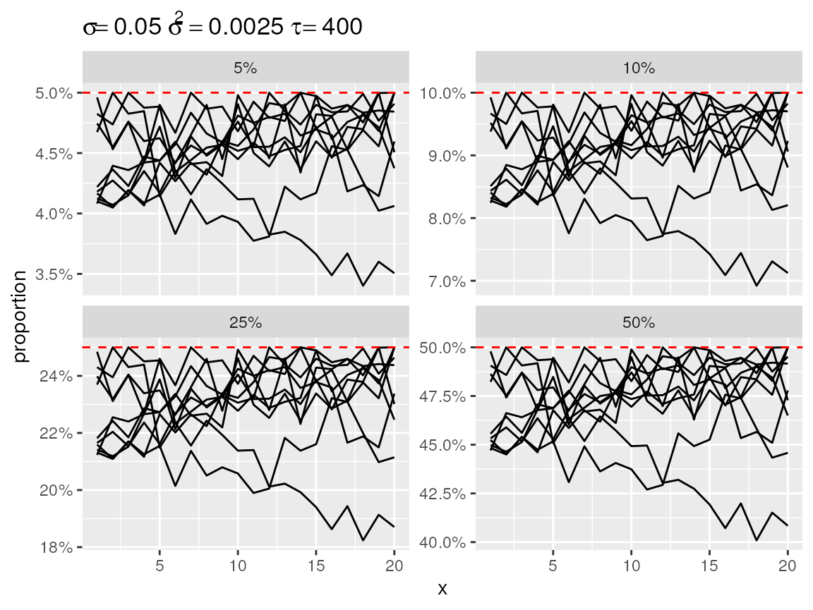
First order random walks with lots of changes in directions after centering to the top.